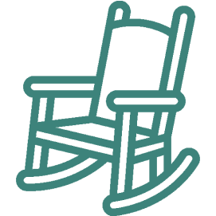
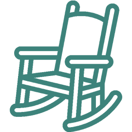

О НАС
Дом-интернат (пансионат) для
престарелых и инвалидов «Гармония»
Республиканское государственное бюджетное учреждение «Дом-интернат общего типа для престарелых и инвалидов», создан в соответствии с Гражданским кодексом Российской Федерации на основании постановления Президиума Правительства Карачаево-Черкесской Республики от 28.07.99
№213 «О республиканском Доме-интернате для престарелых и инвалидов», приказа Министерства социальной защиты населения Карачаево-Черкесской Республики от 29.07.99 №97 «О республиканском Доме-интернате для престарелых и инвалидов».
РГБУ «Дом-интернат общего типа для престарелых и инвалидов» является учреждением социального обслуживания в стационарной форме, имеет свой Устав, функционирует под руководством Министерства труда и социального развития КЧР.
Учреждение предназначено для оказания социальной помощи в стационарной форме гражданам пожилого возраста и инвалидам (женщины после — 55 лет, мужчины — после 60, участники Великой Отечественной войны, вдовы умерших ветеранов, труженики тыла, ветераны труда, инвалиды I, II и III групп), нуждающимся в постоянной или временной посторонней помощи в связи с частичной или полной утратой возможности самостоятельно удовлетворять свои основные жизненные потребности вследствие ограничения способности к самообслуживанию и передвижению.
Основная деятельность учреждения
01
Создание для граждан пожилого возраста и инвалидов, соответствующих их возрасту и состоянию здоровья условий жизнедеятельности;
02
Обеспечение питанием, уходом, оказание первичной, в том числе доврачебной медико-санитарной помощи;
03
Организация отдыха и досуга граждан пожилого возраста и инвалидов;
04
•социально-медицинского
•социального
•психологического
•лечебно-трудового
05
•социально-психологических
•социально-педагогических
•социально-трудовых
•социально-правовых
 

В структуру учреждения входят:
Отделение активного долголетия
Предназначено для организации социально-бытовой адаптации граждан пожилого возраста и инвалидов к условиям проживания в учреждении; содействия и проведения социально-реабилитационных мероприятий для граждан пожилого возраста и инвалидов, в том числе мероприятий, направленных на развитие их способностей к бытовому самообслуживанию и организации посильной трудовой деятельности.
Отделение милосердия
Предназначено для организации социально-бытового обслуживания граждан пожилого возраста и инвалидов, находящихся на постельном режиме содержания или передвигающихся в пределах комнаты с посторонней помощью; совершенствования социально-бытовой и психологической приспособляемости граждан пожилого возраста и инвалидов.